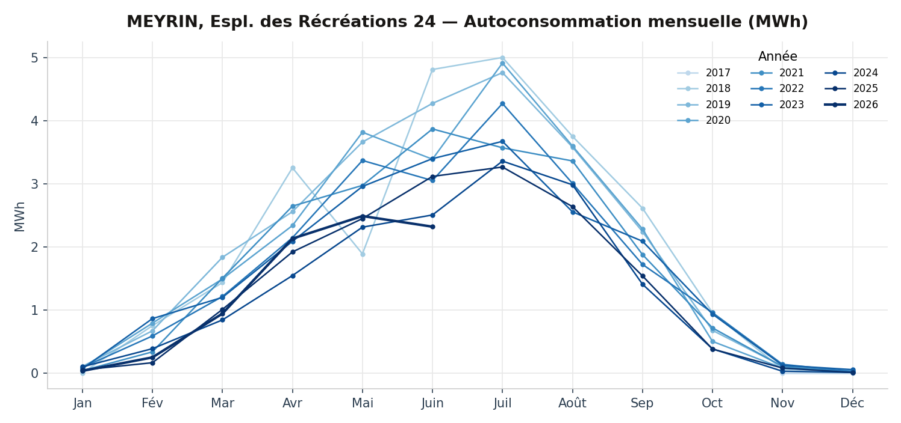
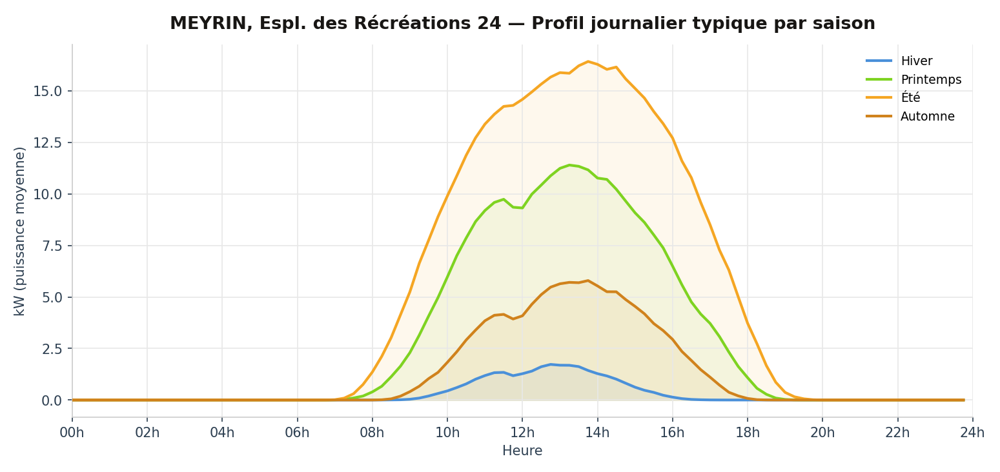
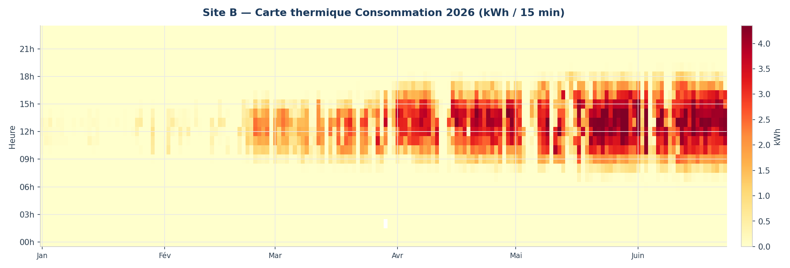
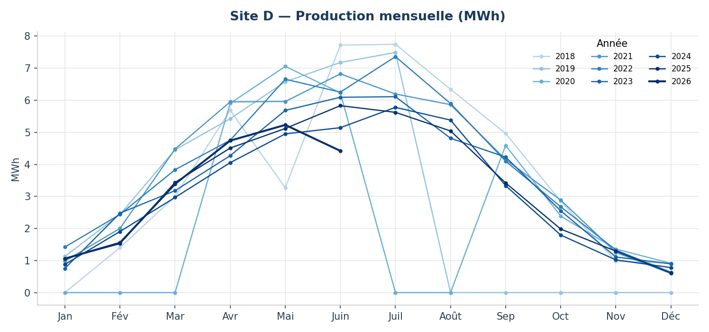
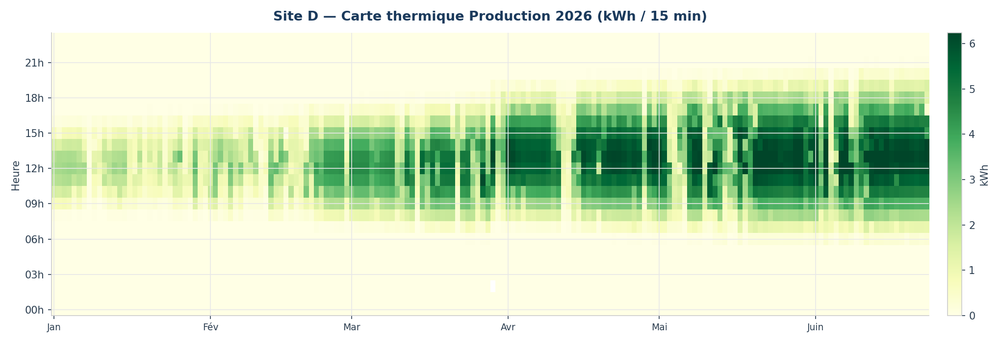

MEYRIN, Espl. des Récréations 24
Esplanade des Récréations 24, 1217 Meyrin, Suisse
Description
La coopérative Enerko a financé les installations photovoltaïques sur les toitures des trois bâtiments de la coopérative équilibre, à la promenade de l'Aubier 19-20-21. La coopérative Enerko a également monté et gère l'exploitation des trois communautés d'autoconsommateurs au sein des bâtiments, ceci afin de maximiser l'autoconsommation de l'électricité solaire produite en toiture.
Plus de détails
L'installation PV
Ces installations se composent au total de 447 modules polycristallins (Canadian Solar 270 Wc) pour une puissance totale de 121 kWc. Les modules PV sont disposés sur les toitures plates soit en dômes Est-Ouest, soit en shed orientés Sud-Ouest (45°), à 10° d'inclinaison. Six onduleurs SMA (Sunny Tripower 25000TL/20000TL/5000TL), positionnés en toiture, transforment le courant continu en courant alternatif utilisable dans le bâtiment et compatible avec le réseau électrique. La production d'électricité solaire annuelle se monte à 140'000 kWh, soit l'équivalent de la consommation d'environ 50 logements genevois.
Le financement
L'investissement de CHF 200'000.- est porté par la coopérative Enerko.
Les communautés d'autoconsommateurs
Tous les locataires (ménages et activités), ainsi que les consommateurs techniques (pompe à chaleur, ventilation, communs d'immeubles, etc.) sont regroupés dans une communauté d'autoconsommateurs. La coopérative Enerko est la représentante de la communauté vis-à-vis de SIG, donc elle reçoit de la part de SIG une facture globale électrique, qu'elle refacture à chaque membre selon sa propre consommation électrique au tarif du produit soutiré (Vitale Bleu tarif double).
Du fait de la configuration des installations électriques, la consommation instantanée d'électricité PV est priorisée par rapport à l'électricité provenant du réseau électrique. Ce regroupement permet ainsi d'autoconsommer plus de la moitié de la production PV. L'électricité PV couvre environ un tiers de la consommation électrique totale des bâtiments.
Les trois bâtiments sont raccordés au même compteur SIG : sur le plan des données mesurées ci-dessous, ils apparaissent donc comme un seul point d'autoconsommation et un seul point de production, et non comme trois installations distinctes.
Données mesurées
Séries mesurées SIG au pas de 15 minutes pour cette installation — mêmes graphiques que l'explorateur de la page d'accueil.
Autoconsommation
100.0% complet (2017-11-29 → 2026-06-23)Aucun trou significatif détecté.
Évolution mensuelle

Profil journalier typique

Carte thermique

Production
90.0% complet (2018-01-31 → 2026-06-23)Trous : 2019-08-01 → 2020-03-31 (244 j) · 2020-07-01 → 2020-08-31 (62 j)
Évolution mensuelle

Profil journalier typique

Carte thermique
